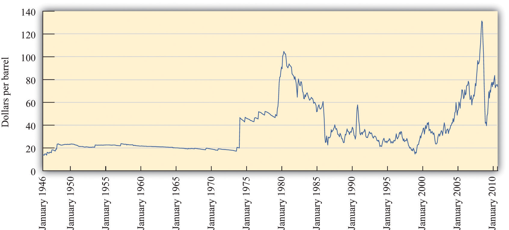

Some individuals take deliberate actions to limit or reduce their environmental impact. For some people, the choice of a greener lifestyle can affect almost all aspects of their consumption, including housing, transportation, and the food that they eat. There are, of course, many different ways in which our actions affect the environment. Our choices affect the amounts of pollutants that are emitted into the air and the water. They affect the amount of greenhouse gases that enter the atmosphere, which in turn has an impact on climate change. And they affect the rate at which we use up natural resources such as oil.
We explained that air pollution from automobiles is an example of an externality, which means that there is a divergence between marginal private costs and marginal social costs. Because of this externality, decisions to drive in a city can generate a social dilemma. It is not obvious, though, that consumption of gasoline generates an analogous problem. Some people argue that, if you are willing to pay for gasoline, you have the right to buy as much or as little as you please. If you want to drive a gas-guzzling Hummer or sport utility vehicle (SUV) rather than a fuel-efficient Prius, then—in their view—that is your right. Others make a different claim. They argue that because oil is a scarce resource, we ought to be conservative with its use. Driving a gas guzzler—in their view—wastes the earth’s limited natural resources and thus is environmentally irresponsible. We now evaluate these two views.
Oil is a nonrenewable (exhaustible) resourceA resource that does not regenerate over time.—that is, a resource that does not regenerate over time. Obviously, if we keep using up a nonrenewable resource, we will eventually run out of it, which is why it is called exhaustible. We most often hear this concern voiced about oil. For example, as oil prices increased to record levels in 2008, there was a great deal of discussion in the media about “peak oil”—the point at which world oil production is at its maximum.
Given that total oil resources are limited, we will eventually go beyond the peak oil point. Many commentators believe that we are at or close to this point already and have expressed concern about the implications of this for the world’s economy. Consider, for example, the following quotation from a 2005 report:
World oil demand is expected to grow 50 percent by 2025. To meet that demand, ever-larger volumes of oil will have to be produced. Since oil production from individual reservoirs grows to a peak and then declines, new reservoirs must be continually discovered and brought into production to compensate for the depletion of older reservoirs. If large quantities of new oil are not discovered and brought into production somewhere in the world, then world oil production will no longer satisfy demand. That point is called the peaking of world conventional oil production.Robert L. Hirsch, Roger Bezdek, and Robert Wendling, “Peaking of World Oil Production: Impacts, Mitigation, & Risk Management, ” Minnesotans for Stability, February 2005, accessed January 31, 2011, http://www.mnforsustain.org/oil_peaking_of_world_oil_production_study_hirsch.htm; also quoted in James Hamilton, Limitations of the Hirsch Report on Peak Oil, Econbrowser, August 9, 2005, accessed January 31, 2011, http://www.econbrowser.com/archives/2005/08/limitations_of.html.
When economists read a quotation like this, however, they typically think that something is missing. The quotation says that, at some point “world oil production will no longer satisfy demand.” Economists respond that this does not make sense: the price of oil will adjust to ensure that supply equals demand. Similarly, they would say that it is very unclear what “oil demand is expected to grow 50 percent” means. Does this mean a shift in demand (a 50 percent increase in the quantity demanded at every price) or an increase in the equilibrium quantity (the quantity purchased will be 50 percent higher than it is now)? Fundamentally, economists would say that we cannot talk sensibly about the oil market without discussing what will happen to the price of oil. We turn to this question next.
Suppose you own 1,000 barrels of oil. You want to decide when you should sell them. You could sell them now or hold onto them in the hope that the price of oil will increase. This is a difficult problem, so we begin by making some simplifications. First, imagine you already have the oil in storage, so we can ignore the costs of extracting it from the ground. Second, suppose you can store it for free. Third, suppose you can buy and sell oil in a competitive market.
Even with these simplifying assumptions, it seems as if you are facing a hard decision. In fact, this problem is easier than it looks. If you sell one barrel this year, you get this year’s price. You can invest this at the market rate of interest and get (price this year × interest factor). Alternatively, you can store your oil for a year and then sell it next year at next year’s price. If this year’s price multiplied by the interest rate is greater than next year’s price, then you should sell all of your oil this year. If next year’s price is higher, you should store all of your oil for sale in the future. By following this rule, you can determine how to make the most money from your stock of oil.
Of course, this decision looks the same to anyone else who is in the same position as you. So if this year’s price multiplied by the interest rate is greater than next year’s price, then everyone would try to sell their oil this year. There would be a huge supply of oil to the market, which would tend to reduce the price this year. If next year’s price is higher, then there will be little to no oil supplied to the market this year, which would tend to increase the current price. The only way the oil market will be in equilibrium is if a condition known as the Hotelling ruleAn arbitrage condition for the use of resource stocks. holds. This is an arbitrageThe act of buying and then selling an asset to make a profit. condition for the use of resource stocks. In the case of a nonrenewable resource sold in a competitive market, with no costs of extraction, no costs of storage, and no uncertainty, the rule states that
The Hotelling rule tells us that the price of the resource increases at the rate of interest. For example, if the nominal interest rate is 6 percent (the nominal interest factorA factor, equal to 1 + the nominal interest rate, used to convert dollars today into dollars next year. is 1.06), then the Hotelling rule says that the price of oil will increase 6 percent per year. The rule has a remarkable implication: it does not matter whether you sell your oil or hold onto it. If you sell your oil, you can earn the market rate of interest on your savings. If you hold onto your oil, it as an asset that yields a rate of return equal to the market rate of interest. Either way, you should expect to get the same return.Oil can be thought of as an asset. In Chapter 10 "Making and Losing Money on Wall Street", we discuss how the prices of different kinds of assets are determined. The discussion in that chapter also explains how we can take into account the fact that you don’t know the future price of your asset—in this case, next year’s price of oil—with certainty.
The basic Hotelling relationship underlies the pricing of all renewable and nonrenewable resources, but there are many other factors that also come into play. We can in principle build all these other complications into our equation, but this would require mathematics and analysis that go beyond the level of this book. Still, we can give a brief idea of how to incorporate these other factors.
Costs of storage. If it is costly to store the resource from one year to the next, then the price must increase at a rate fast enough to cover the cost of storage as well as the rate of interest.
Costs of extraction. We have ignored the costs of extracting oil from the ground. This cost is not constant in either the short run or the long run. In the short run (say, in a given year), the marginal cost of extracting oil increases when we pump more oil from the ground. (One implication is that the supply of oil at any given time is not perfectly elastic.) As we start to run out of oil, it is likely that the marginal cost of extracting oil from the ground will increase substantially. This, too, must be factored into the arbitrage condition. Marginal extraction costs that increase over time are an additional factor causing prices to increase.
Discovery of new oil fields. If new oil fields are discovered, then the overall supply of oil in the world increases. This increase in supply leads to a decrease in the price. As soon as there is a discovery of a new field, the price of oil jumps to a new Hotelling path. What matters for the pricing of oil is new information about existing resources. If the oil companies discover a new oilfield—or come up with a better technique for extracting existing reserves—there will be a decrease in the price of oil as soon as this information becomes known to the market. This is why the price of oil is so sensitive to political changes in the Middle East.
Shifts in the demand curve. The price of oil is also affected by shifts in the demand curve. For example, the increasing prosperity of countries such as China and India is causing the demand for fossil fuels to shift outward. Technological developments are one source of changes in demand. If scientists were to come up with a cheaper source of energy, the demand for oil would decrease.
Market power. The supply of oil is heavily influenced by the decisions of oil-rich countries such as Saudi Arabia and Kuwait. Producers with market power tend to restrict supply to force prices up. The effect of this is to increase prices at all times, which in turn means that existing stocks of oil will last longer. Market power, in and of itself, does not affect the basic conclusion from the Hotelling rule unless the degree of market power changes over time.
Uncertainty. Finally, we took the stock of oil, the demand curve, and the rate of interest as known with certainty. In reality, of course, all of these are unknown. Changes in the information with regard to any of these variables will lead to changes in the price of oil.
The Hotelling rule is based on a very simple arbitrage idea, so it is highly compelling. Yet it is sometimes difficult to observe the rule in operation in the data for oil or for any other nonrenewable resource. Figure 14.5 "The Price of Oil (in 2008 Dollars)" shows what has happened to the price of oil in the last 60 years or so. The prices are in 2008 dollars. Oil prices were reasonably steady in the 1950s and the 1960s. The 1970s are sometimes called the “oil shock decade,” and from the graph you can see why. The price of oil jumped to a level that is equivalent to over $100 a barrel in 2008 dollars. Then oil prices fell again and were relatively low in the 1980s and 1990s. The early years of the 21st century saw another big increase in oil prices, with the price reaching record levels in 2008.
Figure 14.5 The Price of Oil (in 2008 Dollars)
Oil prices were relatively stable in the 1950s and 1960s, rose rapidly in the 1970s, were low from the mid 1980s until about 2002, and have since increased rapidly.
Source: Federal Reserve Bank of St. Louis FRED database: Spot price of West Texas crude oil (http://research.stlouisfed.org/fred2/data/OILPRICE.txt) deflated by the Consumer Price Index (http://research.stlouisfed.org/fred2/data/CPIAUCSL.txt).
It is not easy to reconcile this figure with the Hotelling rule. We do not see the price of oil increase steadily, as the Hotelling rule seems to suggest. The problem is that the complications that we mentioned in Section 14 "Complications" are quite significant in practice. Over the last several decades, we have seen technological improvements, the discovery of new oil fields, political instability in the Middle East and other oil producing regions of the world, price-fixing by the oil-producing countries, and so on. Most of the time, it seems as if these variables are swamping the pattern we expect from the Hotelling rule.
If we look at other nonrenewable resources, it is likewise difficult to see Hotelling effects. In large part this is because technological improvements have often made resources less valuable, even as they became scarcer. For example, copper became significantly less valuable when scientists developed techniques for transmitting information along fiber-optic cables rather than along copper wire.
For all of these reasons, you should not think of the Hotelling rule as literally describing what will happen to the price of nonrenewable resources in the real world. Instead, you should think of it as explaining one component of the price. If the exhaustion point of the resource is a long way in the future, the Hotelling rule may not play a big role in explaining the price. Other factors that shift the demand and supply curves may explain most of the price variation. Nevertheless, most economists are confident that the Hotelling rule does contribute to resource price changes, and as a resource gets closer to exhaustion, the Hotelling rule will play a bigger and bigger role. James Hamilton, an economist who is an expert on oil, put it as follows in late 2006:
My own view is that, for most of the past century … the resource exhaustion was judged to be sufficiently far off as to be ignored.…I do not infer that the next decade will necessarily be like the previous century. Certainly declining production from U.S. oil reservoirs set in long ago.…
I am not at all prepared to dismiss the hypothesis that [the Hotelling rule has] indeed started to make a contribution to oil prices over the last five years, and will become more apparent over the next five. For example, the announced intention of OPEC producers to cut back production as the price goes below $60 might be most naturally interpreted from that perspective—producers don’t see it as being in their interests to sell for less, given what the oil will be worth in the future.See James Hamilton, “Is Peak Oil Irrelevant?,” Econbrowser, October 24, 2006, accessed January 31, 2011, http://www.econbrowser.com/archives/2006/10/is_peak_oil_irr.html.
The Hotelling rule tells us that we expect the price of a nonrenewable resource to rise as we use it up. As its price increases, households and firms have an incentive to substitute other goods for the resource. As the price of oil increases, people switch to other forms of transportation and more fuel-efficient vehicles. More generally, an increase in the price of oil makes other forms of energy—such as wind, solar, or nuclear power—more attractive.
Nothing in this description suggests any failure of the market mechanism. Although we have explained what will happen as we start to run out of a resource, we have not given any reason to suggest that we will use up the resource too quickly. In fact, we have even pointed to one reason we might be using up oil too slowly: if oil producers have market power, they have an incentive to limit the supply to the market and increase the price. The mere fact of using up a nonrenewable resource does not mean that the market is not efficient. To understand the difference between using oil and polluting the atmosphere, we need a new distinction.
Toolkit: Section 31.19 "Externalities and Public Goods"
A nonexcludable good (or resource) is one for which it is impossible to selectively deny access. In other words, it is not possible to let some people consume the good while preventing others from consuming it. An excludable good (or resource) is one to which we can selectively allow or deny access.
Go back once more to our example of a smoker in an office. The smoker actually consumes two things: she consumes cigarettes and she consumes the clean air in the office by turning it into dirty air (economists call this “joint consumption”). Clean air, like a cigarette, is a “good.” But it is a good with a special property. Under most circumstances, we cannot allow some people access to clean air while denying others access to clean air. Clean air is nonexcludableNot having the possibility that we can selectively allow or deny access..
Drivers in Mexico City likewise consume clean air: driving leads to less clean air and more dirty air. Like the smoker in the office building and the car drivers in Mexico City, polluting firms consume clean air as well. In this instance, we can think of clean air as being another input into the production process. Air pollution is a process by which the nonexcludable resource that we call “clean air” is consumed by households and firms. This is a somewhat unfamiliar way to talk about environmental pollution, but it makes sense once you think about it. At the end of the production process, there is less clean air than before because the firm has made some air dirty. The polluting firm uses clean air in its production process.
Other examples of nonexcludable goods are fireworks displays, lighthouses, fish in the ocean, concerts in a public space, and broadcast television. These examples prompt the following observations.
Going back to our smoking example, we cannot make the air in a single office excludable, but we can perhaps do the next best thing: within a single building, we could certainly imagine permitting smoking in some offices and not in others. In other words, we could define property rights differently in different offices and in this way make clean air partially excludable. In some cases at least, this might be a practical way to accommodate both smokers and nonsmokers. We see something to this effect in airports and other public spaces. Very often you will find that most of an airport is designated as nonsmoking (meaning that the property rights to clean air have been allocated to nonsmokers), but there are designated rooms or areas where smokers have the right to consume—that is, use up—the clean air.
There is a connection between nonexcludability and externalities. As our clean air example suggests, goods—like clean air—that are nonexcludable will tend to be overconsumed. When a good is nonexcludable, its marginal private cost is zero. If its marginal social cost is positive, then there is a negative externality from the consumption of a good. As these observations suggest, there are typically negative externalities associated with nonexcludable (or partially excludable) goods.
The flipside is that nonexcludable goods will be underproduced. To see why, think about whether a private firm will want to produce nonexcludable goods. For goods that are completely nonexcludable, the answer is no. There is no return from producing such goods because they cannot be sold for profit. Anyone can consume these goods without paying for them. Goods that are partially nonexcludable may be produced, but they will be produced in insufficient quantities.
Because clean air is a nonexcludable resource, there are externalities associated with its use, and we know that this implies inefficiency. Economics provides a clear argument for why we end up overconsuming clean air. Similarly, many people take it as self-evident that we are overconsuming oil and other natural resources. The arguments we made with respect to clean air, however, do not translate to the case of oil. It is true, of course, that consumption of oil may have negative externalities because it leads to pollution. But the problem in this case has nothing to do with the fact that oil is a nonrenewable resource.
It is difficult to buy and sell nonexcludable goods—after all, why would anyone buy something that is free? This makes clean air unlike most of the other goods we study in economics. Excludable goods and services, by contrast, are those that we can prevent someone else from enjoying. Excludable goods—like oil—are easily traded in markets.
When people worry about running out of resources, they are speaking, for the most part, about excludable resources: those that are mined from the ground or grown on farms and privately owned forests. Economic analysis suggests that this worry may be largely misplaced. Unless we have specific reasons to think that markets are misallocating these resources, there is no particular cause for concern or government intervention.
There are some exceptions to this principle. Oil is sometimes drilled from pools that are not uniquely owned. Different companies may be able to access the same oil pool. In this case, the oil in the pool is partially nonexcludable—any company with access to the pool is able to drill it. It follows that there is a negative externality associated with the drilling of the oil in this case, so we expect there to be too much drilling.
Oil is a nonrenewable resource. New oil reserves are not going to be created (at least over any period of time relevant to human beings). Over time, the stock of a nonrenewable resource can only decrease, never increase. By contrast, a renewable resourceA resource that regenerates over time. is one that regenerates over time.
Whether the stock of a renewable resource grows, shrinks, or stays constant depends on the balance between how fast we use up the resource and how quickly it regenerates. If a resource is depleted at a rate faster than it regenerates, the stock will decrease. If a resource regenerates faster than it is depleted, the stock will increase. Examples of renewable resources are stocks of fish in the ocean and forests. Clean air and water are also examples of renewable resources: if the source of pollution disappears, then a polluted river or polluted air will tend to improve naturally over time. Of course, this process can take quite a while.
In some cases resources may be renewable only above a certain threshold. For example, we can overfish a particular species of fish to the point of extinction. So although a renewable resource will normally naturally regenerate over time, it can turn into a nonrenewable resource if the stock falls below a critical level.
As with nonrenewable resources, what matters most for efficiency is whether a resource is excludable or nonexcludable. If a renewable resource is excludable, then a modified version of the Hotelling rule applies. The arbitrage condition in this case takes into account the fact that the resource stock gets larger as time goes by. If the resource is nonexcludable, however, then all the problems we saw earlier in the chapter come into play. The marginal social cost of using the resource will typically exceed the marginal private cost, leading to overconsumption of the resource.
Nonrenewable environmental resources get used up over time. With good stewardship, which usually requires well-established property rights, the stocks of renewable resources can stay constant or even increase. Environmental resources, however, typically cannot grow without limit. There is a limit to how many fish there can be in the ocean or how clean the air can be.
Economists also identify a third class of resources, called accumulable resourcesA resource that can be increased without limit over time through investment.. Such resources can increase (more or less) without limit. The most important examples are physical capital (factories, machines, etc.), human capitalThe skills and knowledge that are embodied within workers. (the skills and know-how of workers), and general human knowledge.
Even though there is no reason to think that the depletion of a nonrenewable resource is necessarily a source of economic inefficiency, it does not follow that the depletion of natural resources is without cost for an economy. For example, as oil becomes more expensive, it costs more to produce other goods and services that use energy as an input. From an economic perspective, this is a lot like a worsening of technology.
Crucially, though, we are accumulating resources such as physical capital, human capital, and knowledge at the same time that we are running down our stocks of oil, coal, and other natural resources. In the last couple of centuries, the economy of the world has grown substantially because we have been able to accumulate resources at a rate that far outpaced our depletion of the natural environment. For much of that time, we had natural resources in abundance, so their price stayed low. At the same time, we increased our technological know-how at unprecedented rates.
There is no guarantee, from economics or anywhere else, that this state of affairs will continue. We will continue to run down our stocks of nonrenewable resources. If technological advance (and other accumulation) fails to keep pace, then we might well see the prices of these goods increase. More generally, the fact that we have seen our economies growing in the past is no guarantee that they will continue to grow in the future.
Technological optimists point to the rapid growth of our knowledge and expect this to continue. If they are right, then technological advance will keep our living standards growing even though we are depleting our stocks of resources. Technological pessimists observe that the last two centuries are an anomaly if we look at the broad sweep of human history. If the rate at which we accumulate knowledge, human capital, and other accumulable resources were to decrease significantly, then the drag on the economy from declining resources would begin to seem substantial. Economics does not allow us to predict the future, and we do not know who is right.